Notebook Presentation
Machine Learning Algorithms: Complete Practical Notebook
This notebook teaches core machine learning algorithms in a clear, step-by-step flow. For each algorithm, you will see: 1. The raw dataset 2. The train/test split 3. The model training step 4. The prediction step 5. The evaluation step That makes it easier to understand exactly what data is being used and when.
What Is Machine Learning
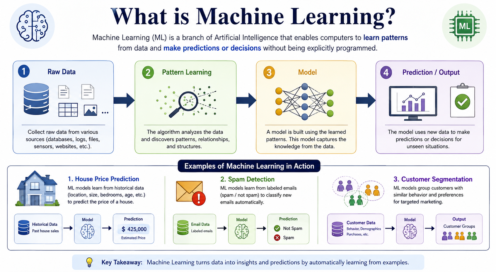
A high-level view of how data is turned into a model that can make useful predictions or decisions.
Types Of Machine Learning
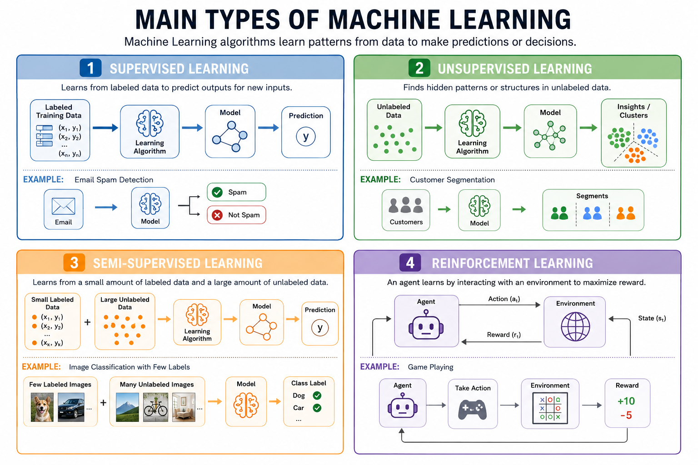
This summary helps separate supervised, unsupervised, semi-supervised, and reinforcement learning before diving into the algorithms.
End-To-End ML Workflow
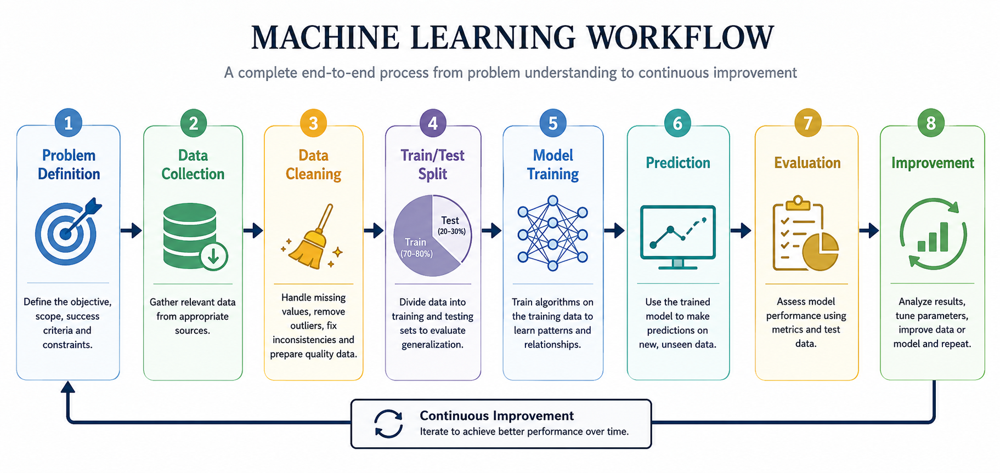
A practical roadmap for how machine learning projects usually move from raw data to evaluation and improvement.
# Run this cell once if needed.
%pip install numpy pandas matplotlib seaborn scikit-learn -qimport warnings
warnings.filterwarnings("ignore")
import numpy as np
import pandas as pd
import matplotlib.pyplot as plt
import seaborn as sns
from IPython.display import display
from sklearn.model_selection import train_test_split
from sklearn.preprocessing import StandardScaler
from sklearn.pipeline import Pipeline
from sklearn.metrics import (
mean_absolute_error,
mean_squared_error,
r2_score,
accuracy_score,
confusion_matrix,
classification_report,
roc_auc_score,
silhouette_score,
)
sns.set_theme(style="whitegrid", context="notebook")
plt.rcParams["figure.figsize"] = (8, 5)
plt.rcParams["axes.titlesize"] = 14
plt.rcParams["axes.labelsize"] = 11
pd.set_option("display.max_columns", 100)
RANDOM_STATE = 42def print_section(title):
print("\n" + "=" * 90)
print(title)
print("=" * 90)
def show_raw_dataset(name, df):
print_section(f"{name} - Raw Dataset Preview")
print("First 10 rows of the dataset:")
display(df.head(10))
print("Dataset shape:", df.shape)
def show_split(name, X_train, X_test, y_train=None, y_test=None):
print_section(f"{name} - Train/Test Split")
print("X_train shape:", X_train.shape)
print("X_test shape :", X_test.shape)
if y_train is not None and y_test is not None:
print("y_train shape:", y_train.shape)
print("y_test shape :", y_test.shape)
def evaluate_regression(y_true, y_pred):
rmse = mean_squared_error(y_true, y_pred) ** 0.5
print(f"MAE : {mean_absolute_error(y_true, y_pred):.4f}")
print(f"RMSE : {rmse:.4f}")
print(f"R^2 : {r2_score(y_true, y_pred):.4f}")
def evaluate_classification(y_true, y_pred, y_proba=None):
print(f"Accuracy: {accuracy_score(y_true, y_pred):.4f}")
print("\nConfusion Matrix:")
print(confusion_matrix(y_true, y_pred))
print("\nClassification Report:")
print(classification_report(y_true, y_pred))
if y_proba is not None:
try:
print(f"ROC-AUC: {roc_auc_score(y_true, y_proba):.4f}")
except Exception:
pass
def show_prediction_table(actual, predicted, probabilities=None, n=10):
table = pd.DataFrame({
"Actual": actual[:n],
"Predicted": predicted[:n]
})
if probabilities is not None:
table["Predicted_Probability"] = np.round(probabilities[:n], 4)
display(table)1. What Is Machine Learning?
Machine Learning is a way of making systems learn patterns from data instead of manually hard-coding every rule.
Main idea:
Xmeans input featuresymeans output or target- the model learns a relationship from
Xtoy
2. Types of Machine Learning
Supervised Learning
We have inputs X and correct answers y.
Used for:
- regression
- classification
Unsupervised Learning
We only have X, with no labels.
Used for:
- clustering
- dimensionality reduction
Supervised Learning
Train-Test Split Concept
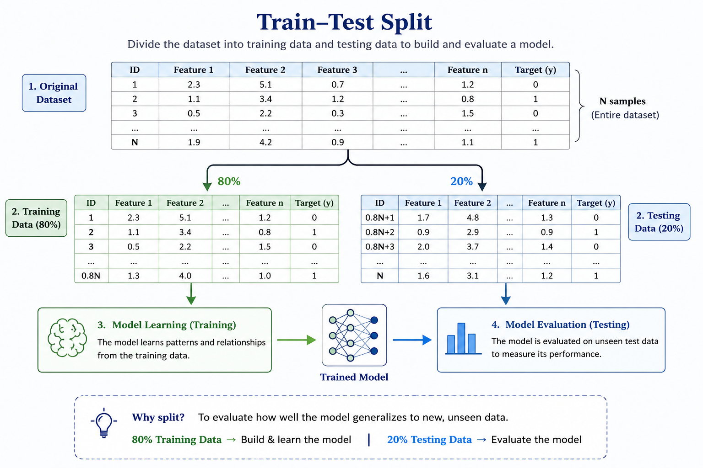
This is one of the most important ideas in the notebook: the model learns from training data and is judged on separate unseen test data.
3. Linear Regression
Linear Regression predicts a continuous value.
Raw dataset used here:
- synthetic dataset created with
make_regression(...) - features are numeric
- target is a continuous number
Linear Regression Concept
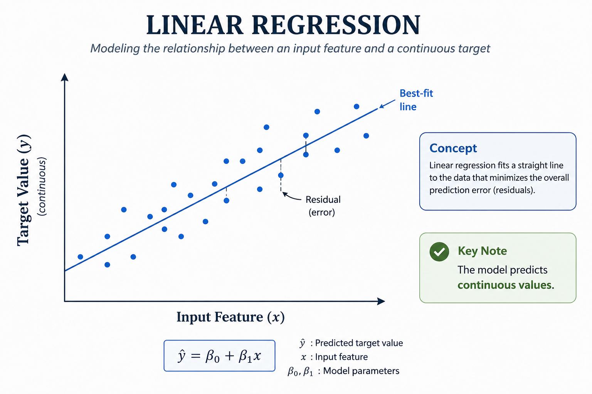
Linear Regression tries to fit the best straight-line relationship between features and a continuous target.
from sklearn.datasets import make_regression
from sklearn.linear_model import LinearRegression
X_lr, y_lr = make_regression(
n_samples=250,
n_features=3,
n_informative=3,
noise=18,
random_state=RANDOM_STATE
)
lr_df = pd.DataFrame(X_lr, columns=["feature_1", "feature_2", "feature_3"])
lr_df["target"] = y_lr
show_raw_dataset("Linear Regression", lr_df)X_train_lr, X_test_lr, y_train_lr, y_test_lr = train_test_split(
X_lr, y_lr, test_size=0.2, random_state=RANDOM_STATE
)
show_split("Linear Regression", X_train_lr, X_test_lr, y_train_lr, y_test_lr)linear_model = LinearRegression()
linear_model.fit(X_train_lr, y_train_lr)
print_section("Linear Regression - Model Training")
print("The model has been trained using X_train_lr and y_train_lr.")
print("Coefficients:", linear_model.coef_)
print("Intercept:", linear_model.intercept_)y_pred_lr = linear_model.predict(X_test_lr)
print_section("Linear Regression - Predictions and Evaluation")
print("Predictions are being made on X_test_lr.")
show_prediction_table(y_test_lr, y_pred_lr)
evaluate_regression(y_test_lr, y_pred_lr)4. Logistic Regression
Logistic Regression is a supervised classification algorithm.
Raw dataset used here:
- synthetic dataset created with
make_classification(...) - features are numeric
- target contains class labels like
0and1
Logistic Regression Concept
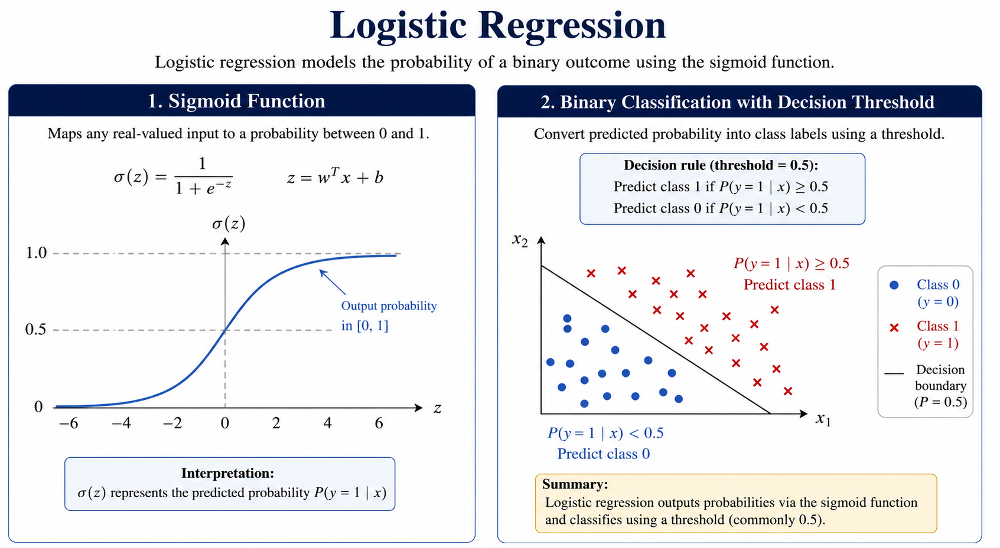
Logistic Regression converts a linear score into a probability so it can make class predictions such as 0 or 1.
from sklearn.datasets import make_classification
from sklearn.linear_model import LogisticRegression
X_log, y_log = make_classification(
n_samples=400,
n_features=6,
n_informative=4,
n_redundant=1,
random_state=RANDOM_STATE, class_sep=1.2
)
log_df = pd.DataFrame(X_log, columns=[f"feature_{i}" for i in range(X_log.shape[1])])
log_df["target"] = y_log
show_raw_dataset("Logistic Regression", log_df)X_train_log, X_test_log, y_train_log, y_test_log = train_test_split(
X_log, y_log, test_size=0.25, random_state=RANDOM_STATE, stratify=y_log
)
show_split("Logistic Regression", X_train_log, X_test_log, y_train_log, y_test_log)log_model = Pipeline([
("scaler", StandardScaler()),
("model", LogisticRegression(max_iter=1000))
])
log_model.fit(X_train_log, y_train_log)
print_section("Logistic Regression - Model Training")
print("The model has been trained using the training dataset.")y_pred_log = log_model.predict(X_test_log)
y_proba_log = log_model.predict_proba(X_test_log)[:, 1]
print_section("Logistic Regression - Predictions and Evaluation")
print("Predictions are being made on X_test_log.")
show_prediction_table(y_test_log, y_pred_log, y_proba_log)
evaluate_classification(y_test_log, y_pred_log, y_proba_log)5. K-Nearest Neighbors (KNN)
K-Nearest Neighbors (KNN) is a supervised classification algorithm.
Raw dataset used here:
- synthetic dataset created with
make_classification(...) - features are numeric
- target contains class labels like
0and1
KNN Concept
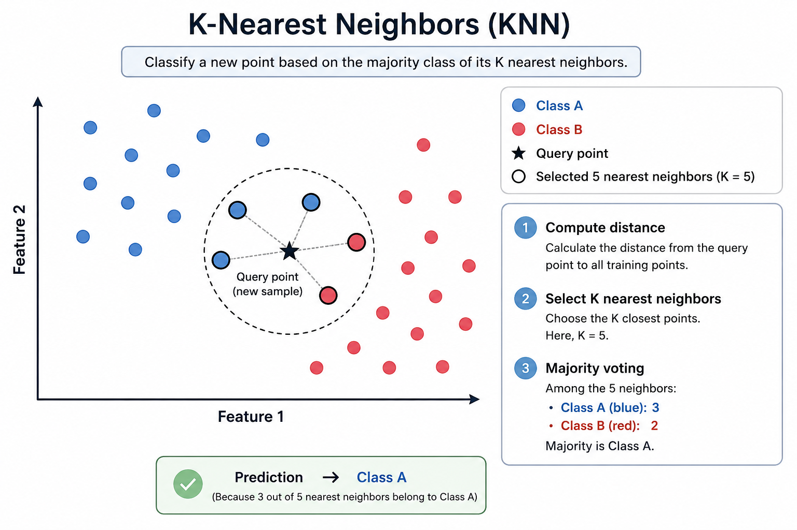
KNN predicts by looking at the closest training points and using their labels as evidence.
from sklearn.datasets import make_classification
from sklearn.neighbors import KNeighborsClassifier
X_knn, y_knn = make_classification(
n_samples=350,
n_features=5,
n_informative=3,
n_redundant=0,
random_state=RANDOM_STATE, class_sep=1.0
)
knn_df = pd.DataFrame(X_knn, columns=[f"feature_{i}" for i in range(X_knn.shape[1])])
knn_df["target"] = y_knn
show_raw_dataset("K-Nearest Neighbors (KNN)", knn_df)X_train_knn, X_test_knn, y_train_knn, y_test_knn = train_test_split(
X_knn, y_knn, test_size=0.25, random_state=RANDOM_STATE, stratify=y_knn
)
show_split("K-Nearest Neighbors (KNN)", X_train_knn, X_test_knn, y_train_knn, y_test_knn)knn_model = Pipeline([
("scaler", StandardScaler()),
("model", KNeighborsClassifier(n_neighbors=5))
])
knn_model.fit(X_train_knn, y_train_knn)
print_section("K-Nearest Neighbors (KNN) - Model Training")
print("The model has been trained using the training dataset.")y_pred_knn = knn_model.predict(X_test_knn)
y_proba_knn = None
print_section("K-Nearest Neighbors (KNN) - Predictions and Evaluation")
print("Predictions are being made on X_test_knn.")
show_prediction_table(y_test_knn, y_pred_knn)
evaluate_classification(y_test_knn, y_pred_knn)6. Support Vector Machine (SVM)
Support Vector Machine (SVM) is a supervised classification algorithm.
Raw dataset used here:
- synthetic dataset created with
make_classification(...) - features are numeric
- target contains class labels like
0and1
SVM Concept
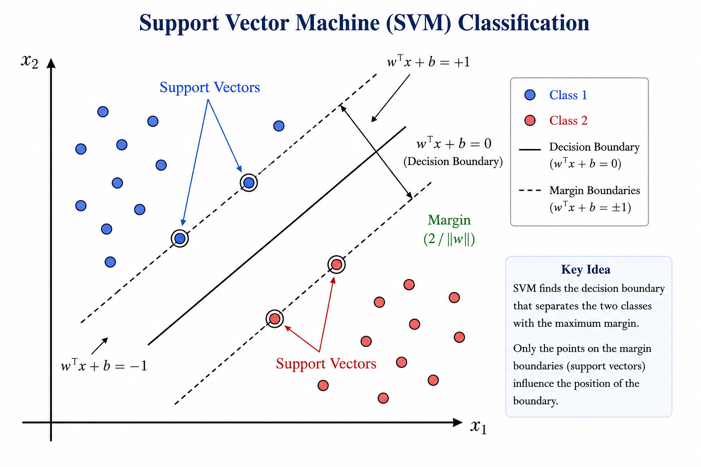
SVM looks for the boundary that separates classes with the largest possible margin.
Kernel Trick
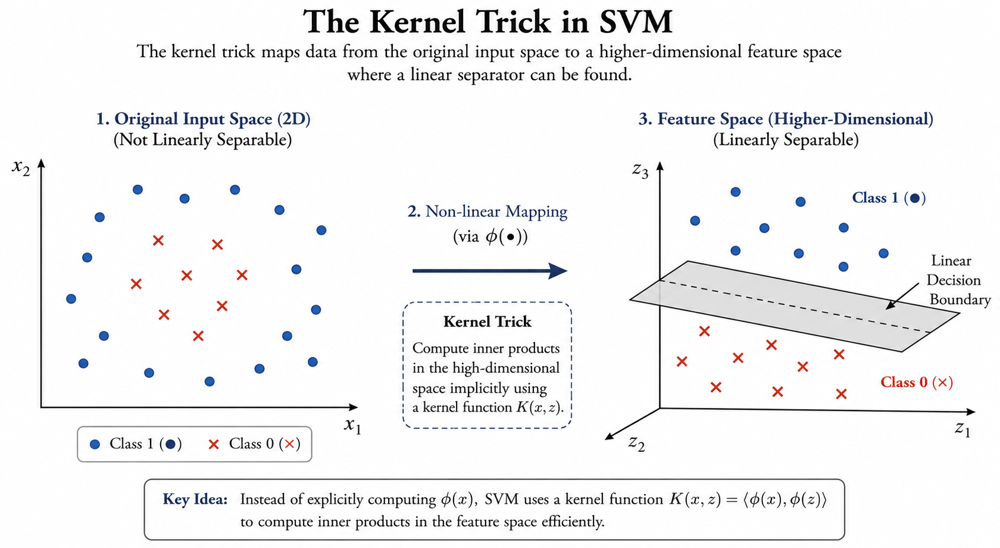
When data is not linearly separable in the original space, kernels help map it into a space where separation becomes easier.
from sklearn.datasets import make_classification
from sklearn.svm import SVC
X_svm, y_svm = make_classification(
n_samples=450,
n_features=8,
n_informative=5,
n_redundant=1,
random_state=RANDOM_STATE, class_sep=1.3
)
svm_df = pd.DataFrame(X_svm, columns=[f"feature_{i}" for i in range(X_svm.shape[1])])
svm_df["target"] = y_svm
show_raw_dataset("Support Vector Machine (SVM)", svm_df)X_train_svm, X_test_svm, y_train_svm, y_test_svm = train_test_split(
X_svm, y_svm, test_size=0.25, random_state=RANDOM_STATE, stratify=y_svm
)
show_split("Support Vector Machine (SVM)", X_train_svm, X_test_svm, y_train_svm, y_test_svm)svm_model = Pipeline([
("scaler", StandardScaler()),
("model", SVC(kernel="rbf", probability=True, C=1.0, gamma="scale"))
])
svm_model.fit(X_train_svm, y_train_svm)
print_section("Support Vector Machine (SVM) - Model Training")
print("The model has been trained using the training dataset.")y_pred_svm = svm_model.predict(X_test_svm)
y_proba_svm = svm_model.predict_proba(X_test_svm)[:, 1]
print_section("Support Vector Machine (SVM) - Predictions and Evaluation")
print("Predictions are being made on X_test_svm.")
show_prediction_table(y_test_svm, y_pred_svm, y_proba_svm)
evaluate_classification(y_test_svm, y_pred_svm, y_proba_svm)7. Naive Bayes Classifier
Naive Bayes Classifier is a supervised classification algorithm.
Raw dataset used here:
- synthetic dataset created with
make_classification(...) - features are numeric
- target contains class labels like
0and1
Naive Bayes Concept
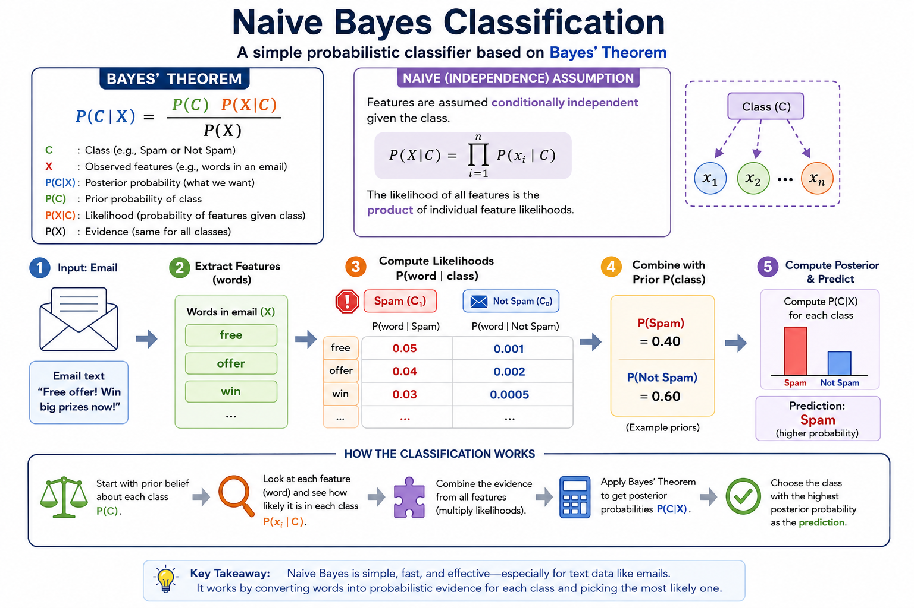
Naive Bayes uses probability and Bayes' theorem to estimate which class is most likely for a given input.
from sklearn.datasets import make_classification
from sklearn.naive_bayes import GaussianNB
X_nb, y_nb = make_classification(
n_samples=350,
n_features=6,
n_informative=4,
n_redundant=0,
random_state=RANDOM_STATE
)
nb_df = pd.DataFrame(X_nb, columns=[f"feature_{i}" for i in range(X_nb.shape[1])])
nb_df["target"] = y_nb
show_raw_dataset("Naive Bayes Classifier", nb_df)X_train_nb, X_test_nb, y_train_nb, y_test_nb = train_test_split(
X_nb, y_nb, test_size=0.25, random_state=RANDOM_STATE, stratify=y_nb
)
show_split("Naive Bayes Classifier", X_train_nb, X_test_nb, y_train_nb, y_test_nb)nb_model = GaussianNB()
nb_model.fit(X_train_nb, y_train_nb)
print_section("Naive Bayes Classifier - Model Training")
print("The model has been trained using the training dataset.")y_pred_nb = nb_model.predict(X_test_nb)
y_proba_nb = nb_model.predict_proba(X_test_nb)[:, 1]
print_section("Naive Bayes Classifier - Predictions and Evaluation")
print("Predictions are being made on X_test_nb.")
show_prediction_table(y_test_nb, y_pred_nb, y_proba_nb)
evaluate_classification(y_test_nb, y_pred_nb, y_proba_nb)8. Decision Tree
Decision Tree is a supervised classification algorithm.
Raw dataset used here:
- synthetic dataset created with
make_classification(...) - features are numeric
- target contains class labels like
0and1
Decision Tree Concept
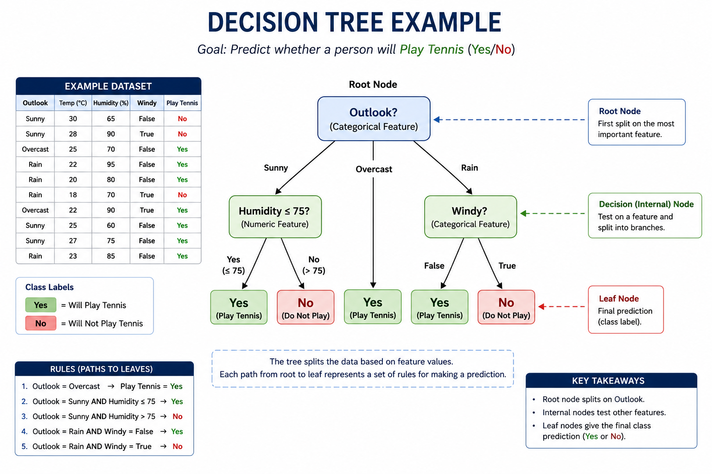
Decision Trees split the data with a sequence of feature-based questions until a prediction is reached.
from sklearn.datasets import make_classification
from sklearn.tree import DecisionTreeClassifier
X_tree, y_tree = make_classification(
n_samples=400,
n_features=7,
n_informative=4,
n_redundant=1,
random_state=RANDOM_STATE
)
tree_df = pd.DataFrame(X_tree, columns=[f"feature_{i}" for i in range(X_tree.shape[1])])
tree_df["target"] = y_tree
show_raw_dataset("Decision Tree", tree_df)X_train_tree, X_test_tree, y_train_tree, y_test_tree = train_test_split(
X_tree, y_tree, test_size=0.25, random_state=RANDOM_STATE, stratify=y_tree
)
show_split("Decision Tree", X_train_tree, X_test_tree, y_train_tree, y_test_tree)tree_model = DecisionTreeClassifier(max_depth=4, random_state=RANDOM_STATE)
tree_model.fit(X_train_tree, y_train_tree)
print_section("Decision Tree - Model Training")
print("The model has been trained using the training dataset.")y_pred_tree = tree_model.predict(X_test_tree)
y_proba_tree = None
print_section("Decision Tree - Predictions and Evaluation")
print("Predictions are being made on X_test_tree.")
show_prediction_table(y_test_tree, y_pred_tree)
evaluate_classification(y_test_tree, y_pred_tree)9. Bagging and Random Forest
These are ensemble methods built from multiple decision trees.
Raw dataset used here:
- synthetic dataset created with
make_classification(...)
Bagging Concept
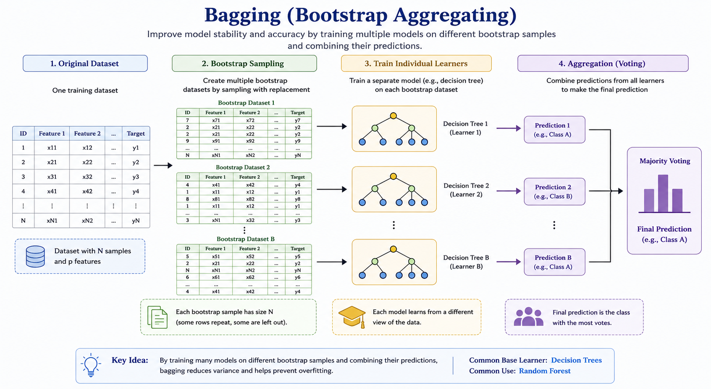
Bagging builds multiple models on bootstrapped samples and then combines them to reduce variance.
Random Forest Concept
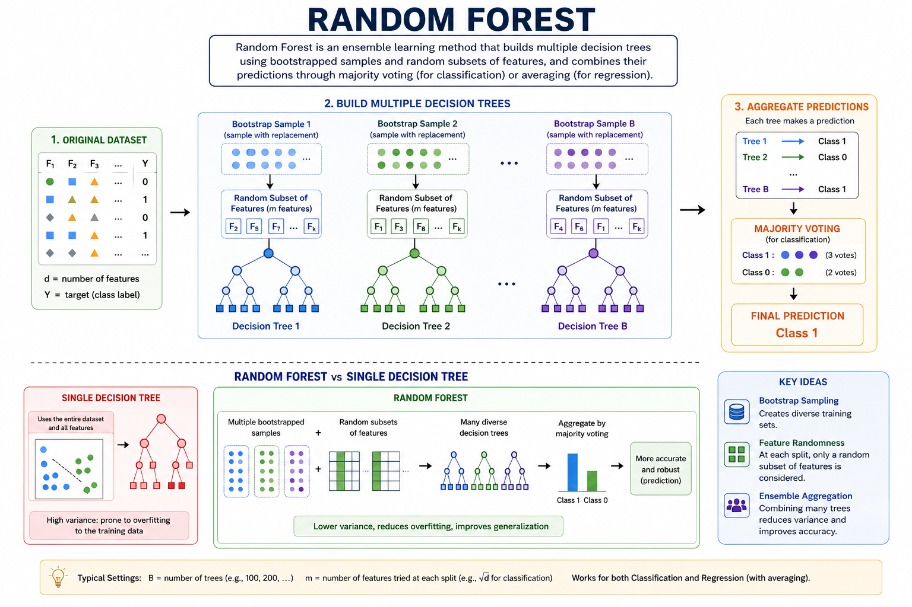
Random Forest improves on a single tree by using many trees plus random feature selection at each split.
from sklearn.datasets import make_classification
from sklearn.tree import DecisionTreeClassifier
from sklearn.ensemble import BaggingClassifier, RandomForestClassifier
X_rf, y_rf = make_classification(
n_samples=500,
n_features=10,
n_informative=6,
n_redundant=2,
random_state=RANDOM_STATE
)
rf_df = pd.DataFrame(X_rf, columns=[f"feature_{i}" for i in range(X_rf.shape[1])])
rf_df["target"] = y_rf
show_raw_dataset("Bagging and Random Forest", rf_df)X_train_rf, X_test_rf, y_train_rf, y_test_rf = train_test_split(
X_rf, y_rf, test_size=0.25, random_state=RANDOM_STATE, stratify=y_rf
)
show_split("Bagging and Random Forest", X_train_rf, X_test_rf, y_train_rf, y_test_rf)bagging_model = BaggingClassifier(
estimator=DecisionTreeClassifier(max_depth=4, random_state=RANDOM_STATE),
n_estimators=50,
random_state=RANDOM_STATE
)
rf_model = RandomForestClassifier(
n_estimators=200,
max_depth=6,
random_state=RANDOM_STATE
)
bagging_model.fit(X_train_rf, y_train_rf)
rf_model.fit(X_train_rf, y_train_rf)
print_section("Bagging and Random Forest - Model Training")
print("Both ensemble models have been trained on the training dataset.")y_pred_bag = bagging_model.predict(X_test_rf)
y_pred_rf = rf_model.predict(X_test_rf)
print_section("Bagging - Predictions and Evaluation")
show_prediction_table(y_test_rf, y_pred_bag)
evaluate_classification(y_test_rf, y_pred_bag)
print_section("Random Forest - Predictions and Evaluation")
show_prediction_table(y_test_rf, y_pred_rf)
evaluate_classification(y_test_rf, y_pred_rf)10. Boosting and Strong Learners
Boosting trains multiple learners sequentially so each one improves previous mistakes.
Boosting Concept
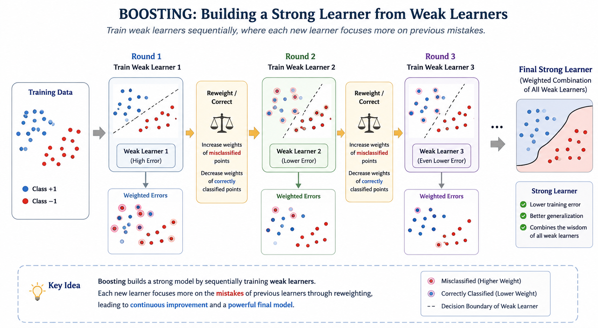
Boosting trains learners one after another so later models focus more on earlier mistakes.
Weak Learner Vs Strong Learner
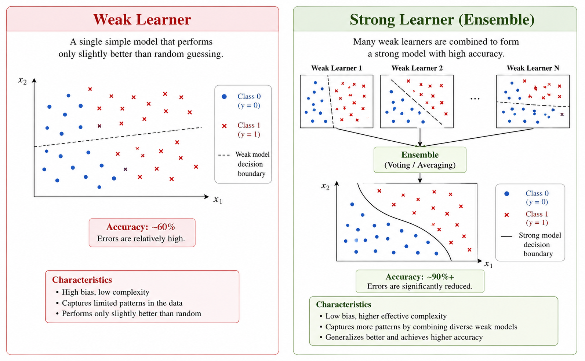
This comparison shows how many modest models can be combined into a much stronger overall learner.
from sklearn.datasets import make_classification
from sklearn.ensemble import AdaBoostClassifier, GradientBoostingClassifier
X_boost, y_boost = make_classification(
n_samples=500,
n_features=10,
n_informative=6,
n_redundant=1,
class_sep=1.1,
random_state=RANDOM_STATE
)
boost_df = pd.DataFrame(X_boost, columns=[f"feature_{i}" for i in range(X_boost.shape[1])])
boost_df["target"] = y_boost
show_raw_dataset("Boosting", boost_df)X_train_boost, X_test_boost, y_train_boost, y_test_boost = train_test_split(
X_boost, y_boost, test_size=0.25, random_state=RANDOM_STATE, stratify=y_boost
)
show_split("Boosting", X_train_boost, X_test_boost, y_train_boost, y_test_boost)ada_model = AdaBoostClassifier(n_estimators=100, random_state=RANDOM_STATE)
gb_model = GradientBoostingClassifier(random_state=RANDOM_STATE)
ada_model.fit(X_train_boost, y_train_boost)
gb_model.fit(X_train_boost, y_train_boost)
print_section("Boosting - Model Training")
print("AdaBoost and Gradient Boosting have been trained on the training dataset.")y_pred_ada = ada_model.predict(X_test_boost)
y_pred_gb = gb_model.predict(X_test_boost)
print_section("AdaBoost - Predictions and Evaluation")
show_prediction_table(y_test_boost, y_pred_ada)
evaluate_classification(y_test_boost, y_pred_ada)
print_section("Gradient Boosting - Predictions and Evaluation")
show_prediction_table(y_test_boost, y_pred_gb)
evaluate_classification(y_test_boost, y_pred_gb)11. Neural Networks / Deep Learning
Neural networks learn layered non-linear patterns from data.
Neural Network Concept
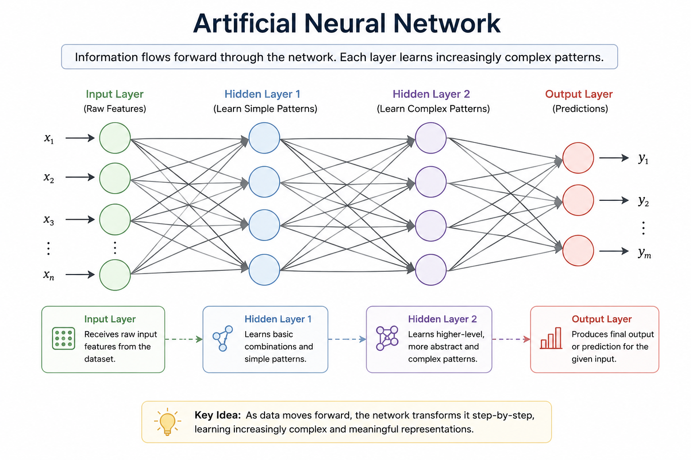
A neural network learns layered transformations from inputs to outputs through connected artificial neurons.
Deep Learning Intuition
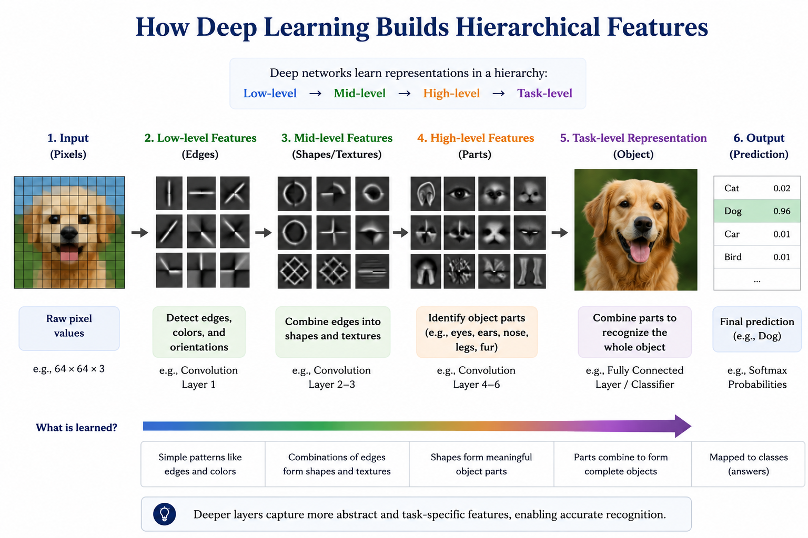
Deep models learn increasingly abstract patterns as information moves through the hidden layers.
from sklearn.datasets import make_classification
from sklearn.neural_network import MLPClassifier
X_nn, y_nn = make_classification(
n_samples=600,
n_features=12,
n_informative=8,
n_redundant=2,
random_state=RANDOM_STATE
)
nn_df = pd.DataFrame(X_nn, columns=[f"feature_{i}" for i in range(X_nn.shape[1])])
nn_df["target"] = y_nn
show_raw_dataset("Neural Network", nn_df)X_train_nn, X_test_nn, y_train_nn, y_test_nn = train_test_split(
X_nn, y_nn, test_size=0.25, random_state=RANDOM_STATE, stratify=y_nn
)
show_split("Neural Network", X_train_nn, X_test_nn, y_train_nn, y_test_nn)nn_model = Pipeline([
("scaler", StandardScaler()),
("model", MLPClassifier(hidden_layer_sizes=(32, 16), max_iter=1200, random_state=RANDOM_STATE))
])
nn_model.fit(X_train_nn, y_train_nn)
print_section("Neural Network - Model Training")
print("The neural network has been trained on the training dataset.")y_pred_nn = nn_model.predict(X_test_nn)
y_proba_nn = nn_model.predict_proba(X_test_nn)[:, 1]
print_section("Neural Network - Predictions and Evaluation")
show_prediction_table(y_test_nn, y_pred_nn, y_proba_nn)
evaluate_classification(y_test_nn, y_pred_nn, y_proba_nn)Unsupervised Learning
12. K-Means Clustering
K-Means groups similar points into clusters.
Raw dataset used here:
- synthetic clustering dataset created with
make_blobs(...)
K-Means Clustering Concept
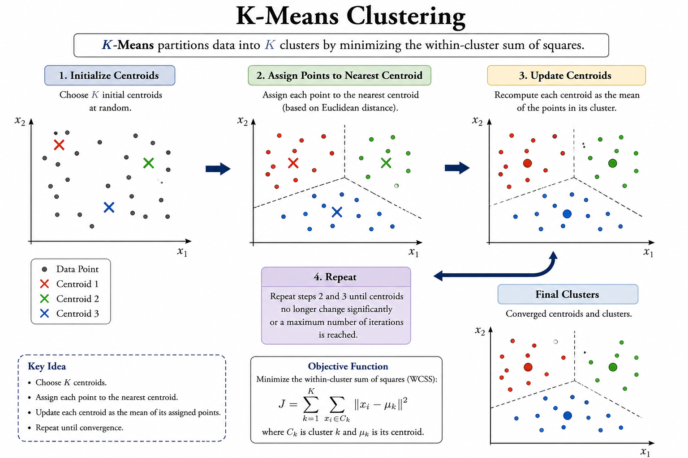
K-Means repeatedly assigns points to the nearest centroid and updates those centroids until clusters stabilize.
Elbow Method Concept
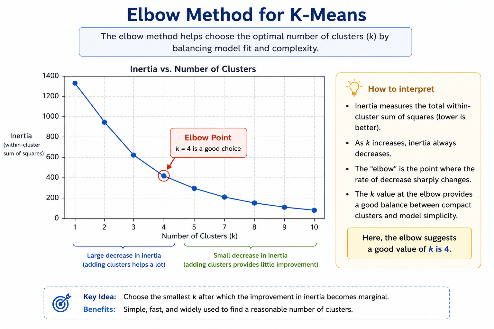
The elbow method helps choose a reasonable number of clusters by looking for diminishing returns in inertia.
from sklearn.datasets import make_blobs
from sklearn.cluster import KMeans
X_kmeans, y_kmeans_true = make_blobs(
n_samples=400,
centers=4,
cluster_std=1.0,
random_state=RANDOM_STATE
)
kmeans_df = pd.DataFrame(X_kmeans, columns=["feature_1", "feature_2"])
kmeans_df["reference_cluster"] = y_kmeans_true
show_raw_dataset("K-Means", kmeans_df)kmeans_model = KMeans(n_clusters=4, random_state=RANDOM_STATE, n_init=10)
cluster_labels = kmeans_model.fit_predict(X_kmeans)
print_section("K-Means - Model Fitting and Cluster Prediction")
print("K-Means was fitted on X_kmeans and predicted cluster labels.")
display(pd.DataFrame({
"feature_1": X_kmeans[:10, 0],
"feature_2": X_kmeans[:10, 1],
"reference_cluster": y_kmeans_true[:10],
"predicted_cluster": cluster_labels[:10]
}))
print("Silhouette Score:", round(silhouette_score(X_kmeans, cluster_labels), 4))13. Dimensionality Reduction
Dimensionality reduction reduces the number of features while preserving useful information.
The most important starting method is PCA.
Dimensionality Reduction Concept
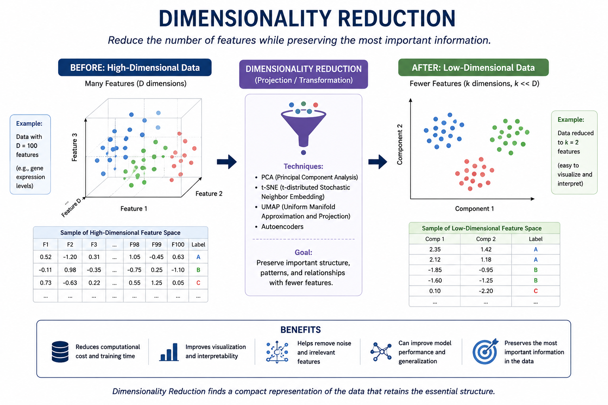
Dimensionality reduction compresses many features into fewer informative directions while trying to preserve structure.
14. PCA
PCA transforms many original features into fewer principal components.
Raw dataset used here:
- real built-in dataset from scikit-learn:
load_wine()
PCA Concept
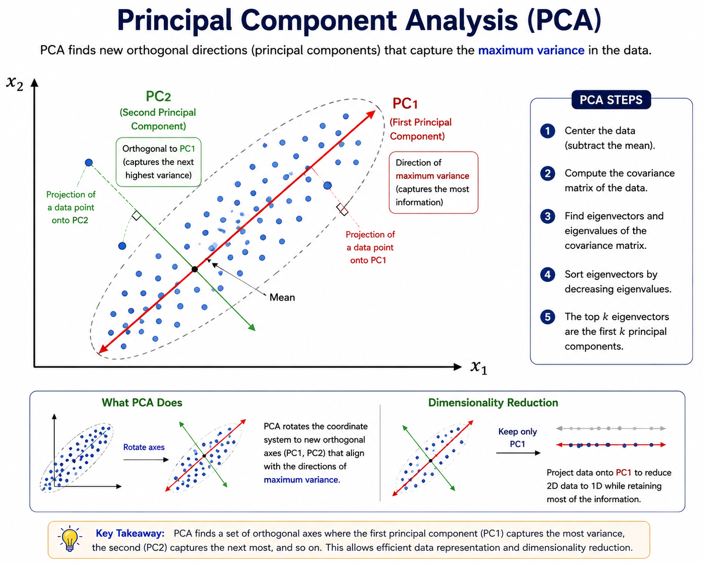
PCA finds new orthogonal axes that capture the greatest variance in the data.
PCA Transformation Intuition
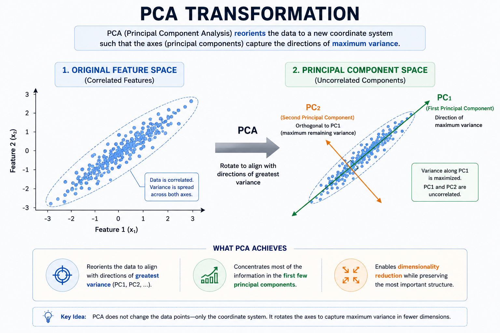
This visual helps explain how the original coordinate system is rotated into principal components.
from sklearn.datasets import load_wine
from sklearn.decomposition import PCA
wine = load_wine()
X_pca = wine.data
y_pca = wine.target
wine_df = pd.DataFrame(X_pca, columns=wine.feature_names)
wine_df["target_class"] = y_pca
show_raw_dataset("PCA - Wine Dataset", wine_df)scaler = StandardScaler()
X_pca_scaled = scaler.fit_transform(X_pca)
print_section("PCA - Data Preparation")
print("The data is scaled before PCA because PCA is sensitive to feature scale.")
print("Scaled shape:", X_pca_scaled.shape)pca = PCA(n_components=2, random_state=RANDOM_STATE)
X_pca_2d = pca.fit_transform(X_pca_scaled)
print_section("PCA - Transformation Output")
print("PCA fitted on the scaled dataset and transformed it into 2 components.")
print("Original shape:", X_pca.shape)
print("Reduced shape :", X_pca_2d.shape)
print("Explained variance ratio:", np.round(pca.explained_variance_ratio_, 4))
display(pd.DataFrame(X_pca_2d[:10], columns=["PC1", "PC2"]).assign(target_class=y_pca[:10]))15. Final Notes
You should now be able to clearly see:
- where each raw dataset comes from
- what the rows look like before training
- how the train/test split is created
- what data is used for fitting
- what data is used for prediction
Important:
X_train,y_trainare used for trainingX_testis used for predictiony_testis used to compare predictions with the true answer
Algorithm Selection Guide
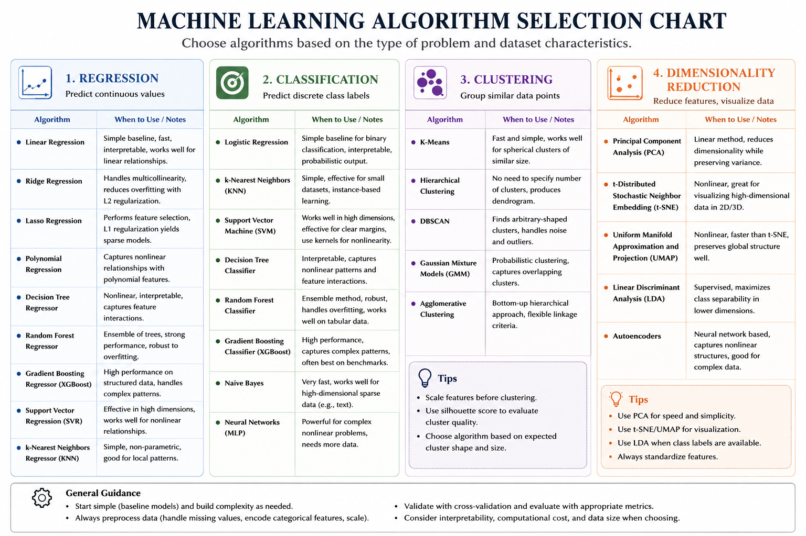
Use this as a quick mental map for choosing a suitable algorithm family based on the type of problem.